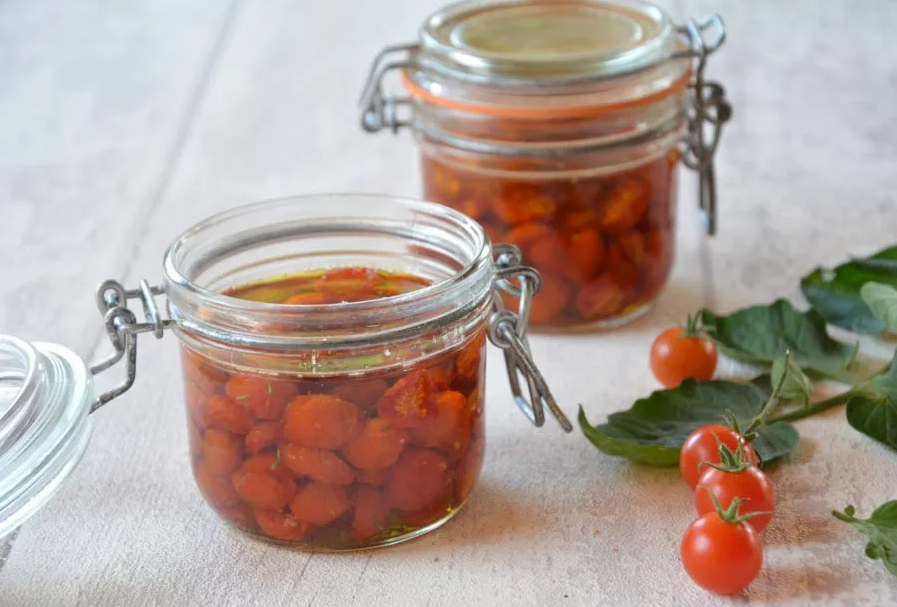

Pour profiter toute l'année des petites tomates du potager !
Laver les tomates ceriseset les disposer sur une plaque à four. Hacher l'ail.
Soupoudrer de sel et de poivre, ajouter un filet d'huile d'olive et l'ail.
Enfourner 2h30 à 100°C.
Laver soigneusement les bocaux (les ébouillanter).
Répartir les tomates équitablement, et compléter jusqu'au trait d'huile d'olive.
Essuyer les rebords des bocaux, ajouter les joints et fermer.
Stériliser 60 minutes à 90°C pour une conservation longue.